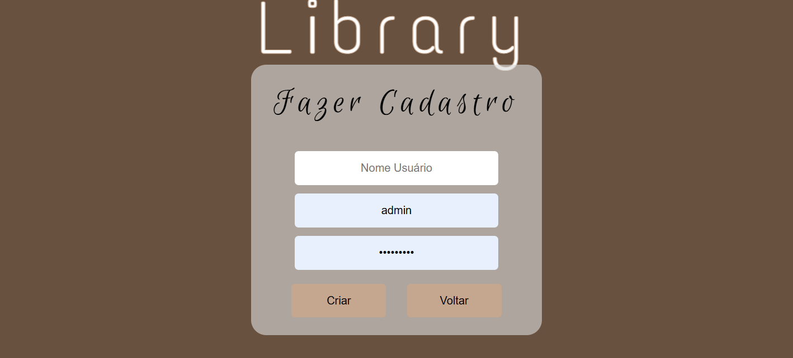

Primeiro Projeto
Link do siteEsse foi o meu primeito projeto, sobre profissões, um trabalho com apenas HTMLS e CSS.
Dificuldades: O principal desafio foi assegurar que todos os elementos estivessem devidamente alinhados e que o site fosse completamente responsivo.

Projeto Atual
O Projeto Atual, é bem mais elaborado do que o primeiro, neste utilizamos banco de dado, php, HTML e CSS.
Dificuldades:Tive dificuldade com o banco de dados, e php para deixar o site dinâmico.
Comparação entre o Primeiro Projeto e o Atual
Progresso Técnico: Antes, eu tinha apenas conhecimento para estilizar sites básicos. Atualmente, desenvolvo páginas dinâmicas e interativas utilizando PHP.
Progresso Criativo: O design foi se alinhando, resultando em um layout mais aprimorado, mudando os tons de cores do fundo e das fontes sabendo combinar cores.